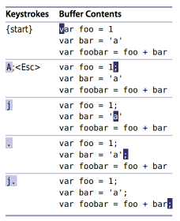

원문 Practical Vim - Tip 2 Don’t Repeat Yourself
아래에 문장 끝에 세미콜론을 추가해야 되는 자바스크립트 코드가 있습니다.
var foo = 1
var bar = 'a'
var foobar = foo + bar
- 커서를 문장 끝으로 이동 ( $ )
- 입력모드로 변경 ( a )
- 세미콜론을 추가 ( ; )
- 명령모드로 변경 ( ESC )
위와 같이 입력하면 첫 번째 문장문장 끝에 세미콜론을 추가할 수 있습니다. 그리고 나머지 두 줄은 간단히 아래와 같이 처리 할 수 있습니다.
- 아래로 이동 ( j )
- 커서를 문장 끝으로 이동 ( $ )
- 앞서 입력한 a; 명령 반복 ( . )
개선의 여지가 없을까요 ?
불필요한 이동 줄이기
a 명령은 현재의 커서 뒤에 내용을 추가하지만, A 명령은 라인 끝에 내용을 추가합니다. 다시 말해 A를 누르면 현재의 커서 위치에 상관없이 해당 라인의 끝으로 이동 후에 입력모드로 변환됩니다. 즉 $a를 하나의 키 입력으로 압축한 것입니다. ‘일타이피(Two for the Price of One)’에서 *A*와 같은 키조합을 참고하세요.
앞 예제를 개선하면 아래와 같습니다.

*$a*대신 *A*를 사용하면, 점명령에 날개를 달아주게 됩니다. 커서가 라인의 컬럼 위치에 상관없이 라인끝으로 이동하므로 변경할 라인만 확인 후 필요한 만큼 *j.*를 누르면 됩니다.
이동하기 위해 j, 실행하기 위해 . 더 이상 좋은 방법은 없습니다. 앞으로 2개의 예제를 더 살펴볼 것이며, 이런 사용패턴을 지켜보시기 바랍니다.
이와같이 간단한 예제에 대한 이런 방식은 좋아 보이지만, 보편적인 해결책은 아닙니다. 만약 50개의 연속 된 라인에 세미콜론을 추가해야 한다고 상상하면, 변경마다 *j.*를 누르는 것은 아주 짜증나는 작업으로 보이기 시작합니다. 이에 대한 또 다른 접근방법은 Tip30 에 있습니다.